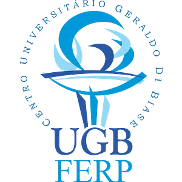

<header class="site-header">
  <div class="navbar">

    <nav class="nav-links">
      <a href="index.html">Home</a>
      <a href="circular.html">Announcements</a>
      <a href="inscricoes.html">Registration &amp; Submission</a>
      <a href="local.html">Venue &amp; Accommodation</a>
      <a href="templates.html">Templates</a>
      <a href="cronograma.html">Schedule</a>
      <a href="homenagem.html">Tribute</a>
      <a href="premio.html">Wagner Sessin Award</a>
      <a href="organizacao.html">Organising Committee</a>
    </nav>

    <a href="inscricoes.html" class="nav-cta">Register</a>

    <div class="sidebar-support" aria-label="Support">
      <h3>Support</h3>
      <div class="sidebar-logos">
        <a class="sidebar-logo sidebar-logo-square" href="https://ugb.edu.br/" target="_blank" rel="noopener noreferrer" aria-label="UGB/FERP">
          
        </a>
        <a class="sidebar-logo" href="https://www.faperj.br/" target="_blank" rel="noopener noreferrer" aria-label="FAPERJ">
          
        </a>
        <a class="sidebar-logo" href="https://www.gov.br/observatorio/" target="_blank" rel="noopener noreferrer" aria-label="Observatório Nacional">
          
        </a>
      </div>
    </div>

  </div>
</header>
